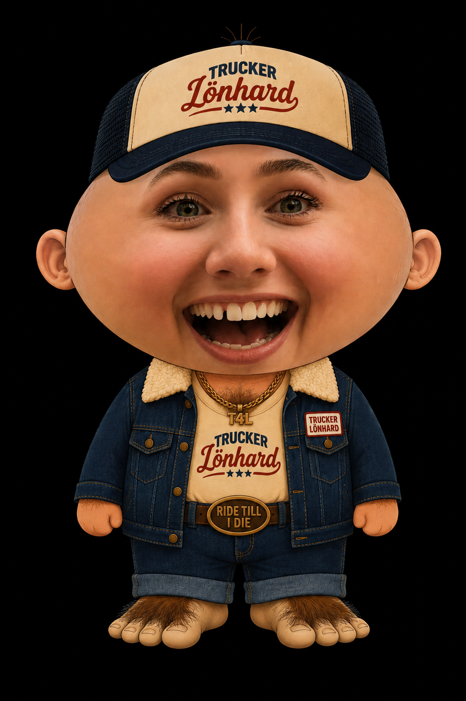
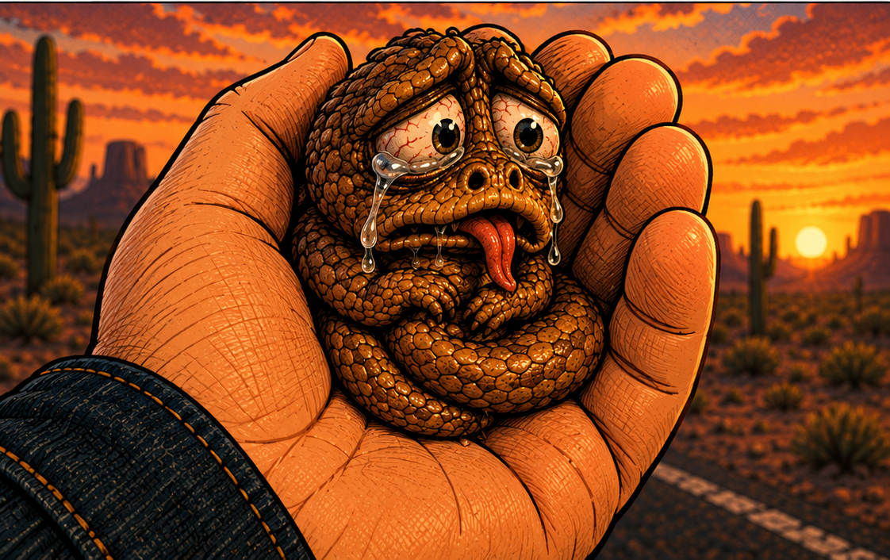
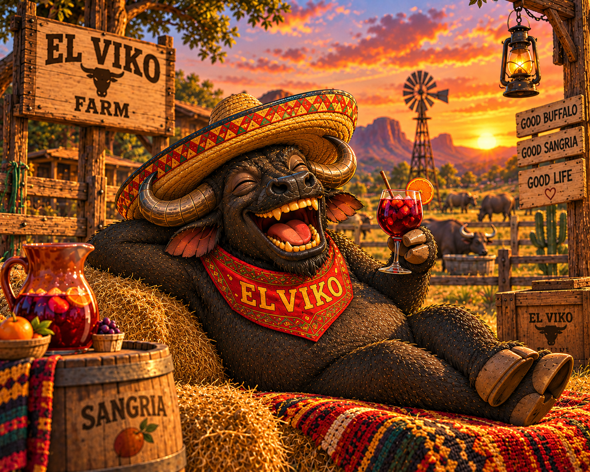
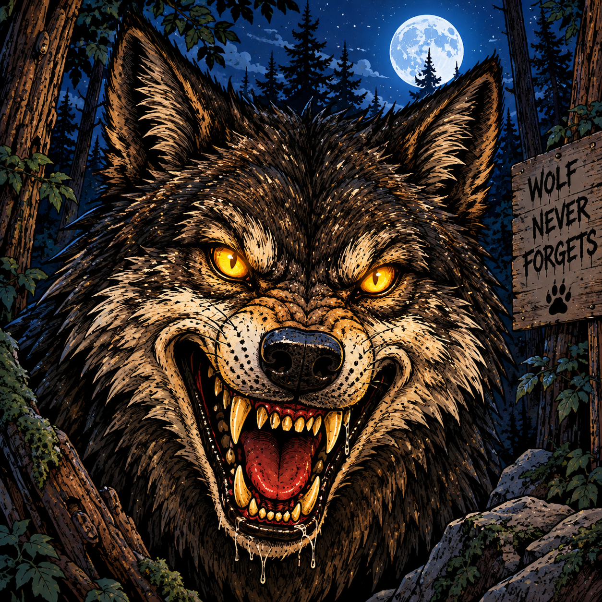
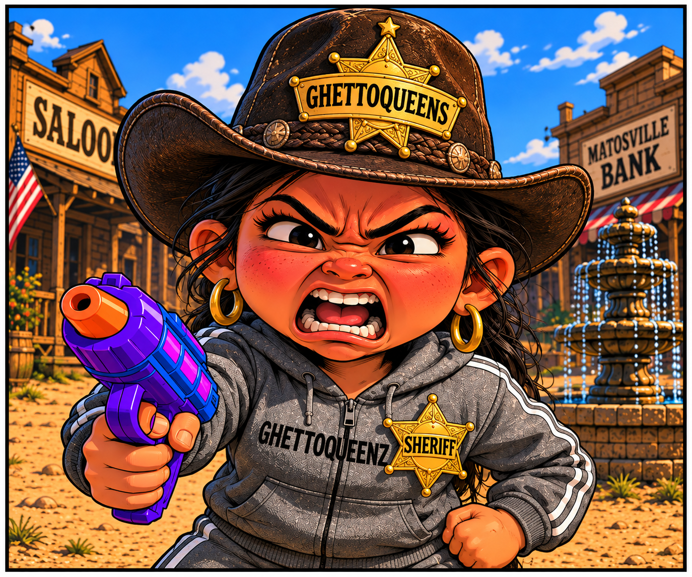
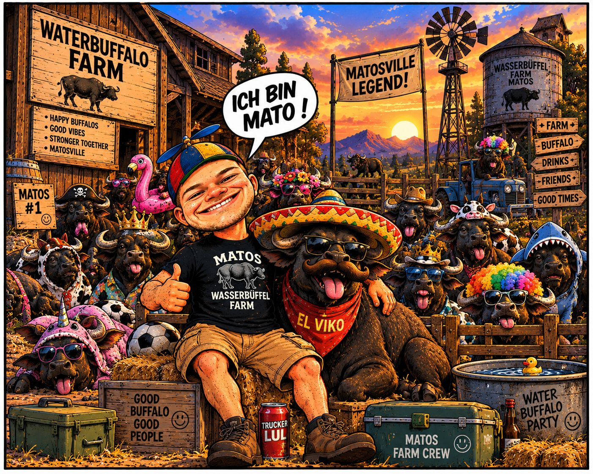

DIE CHARAKTERE VON
TRUCKER LÖNHARD
Lerne die Figuren aus der verrückten Welt von Trucker Lönhard kennen.

TRUCKER & FERNFAHRER
TRUCKER LÖNHARD
HINTERGRUNDGESCHICHTE
Trucker Lönhard wurde vor 51 Jahren in Ostdeutschland geboren und wuchs in ärmlichen Verhältnissen auf. Das Leben auf der Straße wurde ihm praktisch in die Wiege gelegt: Sein Vater war selbst Trucker, während seine Mutter als Automechanikerin arbeitete.
Einen großen Teil seiner Kindheit verbrachte Lönhard entweder auf der Straße oder zwischen Werkzeug, Motoren und Ersatzteilen in der Autowerkstatt. Bereits mit zwölf Jahren fing er an zu rauchen. Später absolvierte er eine Ausbildung zum Mechaniker.
Mit gerade einmal 16 Jahren begann Lönhard, durch das Land zu trampen. Auf seinen Reisen entdeckte er schließlich seine große Leidenschaft: Trucks.
Mit 21 kaufte er sich seinen ersten eigenen Truck. Seitdem verdient er sein Geld als Trucker und Fernfahrer – und für Lönhard gibt es bis heute kaum etwas Besseres als endlose Straßen, große Maschinen und das Leben unterwegs.
PERSÖNLICHKEIT
Lönhard ist laut, stürmisch und besitzt eine ausgesprochen kurze Zündschnur. Wenn ihm etwas nicht passt, fährt er schnell aus der Haut. Beleidigungen und Beschimpfungen gehören für ihn beinahe zum normalen Gespräch.
Seine große Klappe wird nur noch von seinem Ego übertroffen. Lönhard hält sich selbst nicht einfach nur für einen guten Trucker – er hält sich für den besten Trucker der Welt und gelegentlich sogar für Gott persönlich.
Dazu kommen seine beiden großen Laster: Bier und Kippen. Lönhard ist Kettenraucher und einem kalten Bier nur selten abgeneigt.

SCHLANGE & CHAOS-EXPERTE
FRIDOLIN
HINTERGRUNDGESCHICHTE
Fridolin stammt aus Texas. Sein genaues Alter ist unbekannt. Er hat 30 Geschwister und sogar eine Eidechse als Cousin.
Nach einer ungewöhnlichen Verwandlung verlor Fridolin einen großen Teil seiner ursprünglichen Größe und blieb dauerhaft klein. Was allerdings kaum jemand weiß: In dem winzigen Körper steckt noch immer eine gewaltige, bislang kaum entdeckte Kraft.
PERSÖNLICHKEIT
Fridolin lispelt, liebt Süßigkeiten und kann davon kaum genug bekommen. Wenn er zu sehr aufdreht, verliert er gelegentlich völlig den Bezug zur Realität und hält sich zum Beispiel plötzlich für einen Vogel.
Trotz seiner kleinen Größe sollte man ihn nicht unterschätzen. Seine verborgene Kraft macht ihn zu einem der überraschendsten Mitglieder der Gruppe.

WASSERBÜFFEL
EL VIKO
„Das Leben ist zu kurz für Stress und schlechte Sangria.“
HINTERGRUNDGESCHICHTE
EL VIKO stammt aus Mexiko. Seine Eltern flohen und ließen ihn bereits als Baby zurück. Schließlich wurde er von Mato aufgenommen und wuchs bei ihm auf.
EL VIKO entwickelte sich zu einem außergewöhnlich starken und schnellen Wasserbüffel. Trotz seiner beeindruckenden Größe gehört er zu den entspanntesten Bewohnern von Matosville.
Er liebt mexikanisches Essen, spanische Musik und gemütliche Abende mit einem Glas Sangria.
PERSÖNLICHKEIT
EL VIKO ist ruhig, entspannt und lässt sich nur schwer aus der Ruhe bringen. Gleichzeitig besitzt er enorme Kraft und überraschend viel Geschwindigkeit.
Er spricht mit einem spanischen Akzent und genießt das Leben lieber, als sich unnötig stressen zu lassen.

GEGENSPIELER
DER WOLF
„Man weiß nie, was er als Nächstes plant.“
HINTERGRUNDGESCHICHTE
Über die Vergangenheit des Wolfs ist praktisch nichts bekannt. Niemand weiß genau, woher er kommt oder welches Ziel er eigentlich verfolgt.
Sicher ist nur, dass er immer wieder dort auftaucht, wo Lönhard und seine Freunde gerade am wenigsten mit ihm rechnen.
PERSÖNLICHKEIT
Der Wolf ist bösartig, hinterlistig und manipulativ. Er arbeitet lieber mit Täuschung und Überraschung als mit offenen Karten.
Seine größte Stärke ist seine Unberechenbarkeit.

SHERIFF VON MATOSVILLE
SHERIFF GHETTOQUEENS
HINTERGRUNDGESCHICHTE
GHETTOQUEENS stammt aus Osteuropa und hat einen medizinischen Hintergrund.
Später absolvierte sie in Spanien eine Weiterbildung zum Sheriff. Ihren großen Durchbruch hatte sie schließlich in Matosville, wo sie sich selbst zum Sheriff ernannte.
Als Waffe trägt sie eine Wasserpistole bei sich. Diese ist allerdings nicht ganz gewöhnlich, denn sie ist mit geheimnisvollem Zauberwasser gefüllt.
PERSÖNLICHKEIT
GHETTOQUEENS ist klein, verpeilt und schnell aggressionsbereit. Sie besitzt eine kurze Zündschnur und ist durchaus gewaltbereit.
Gleichzeitig kann sie aber auch nett und hilfsbereit sein.
Besonders treffsicher ist sie mit ihrer Wasserpistole nicht. Eine ihrer größten Schwächen ist außerdem Shopping.

FARMBESITZER & ABENTEURER
MATO MCLOVIN
„Kröten.“
HINTERGRUNDGESCHICHTE
Mato wurde vor 29 Jahren in Matosville, einer bayerischen Siedlung in Mexiko, geboren. Einen Teil seiner Kindheit verbrachte er in Bayern, wo er mit Mobbing zu kämpfen hatte.
Später absolvierte Mato eine Ausbildung zum Koch. Anschließend ging er auf Weltreise und lernte dabei verschiedene Länder und Kulturen kennen.
Sein Großvater war der Gründer von Matosville. Auf der Wasserbüffelfarm lernte Mato das Leben mit den Tieren kennen. Für ihn sind die Wasserbüffel nicht einfach nur Tiere, sondern Freunde und Familie.
PERSÖNLICHKEIT
Nach außen ist Mato freundlich und hilfsbereit. Gleichzeitig hadert er innerlich häufig mit sich selbst und denkt über viele Dinge länger nach.
Eine besondere Begeisterung hat Mato für Orcas und Schildkröten. Schildkröten bezeichnet er allerdings grundsätzlich als „Kröten“.